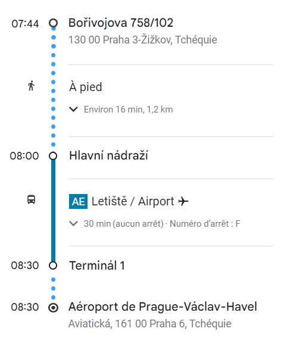

Le Rassemblement
Les etudiants ont rendez-vous le 15 juin 2025 à 7h30 devant l'auberge de jeunesse
Le départ doit être effectué à 7h40 maximum
Vous empreindrez le bus pour effectuer le trajet suivant:

A l'aeroport
Le vol est prévue pour 10h05.
Il devrait y avoir entre 30 et 45 minute d'attente s'il n'y a aucun retard
Arrivé sur place
Une fois arrivé sur place, il faut prendre le bus qui a été réservé et reprendre la route à 12h30 au plus tard.
Il faut prévoir environ 1h de trajet entre l'aéroport d'Orly et l'IUT, l'arrivée se fera donc aux alentours de 13h30.